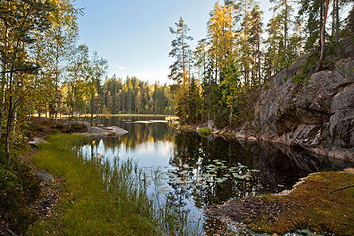

Syksyinen Metsäretki
Koe syksyn väriloisto ja rauhallisuus Nuuksion metsissä. Lähde mukaan retkelle, jossa luonto näyttäytyy kauneimmillaan.
Tutustu LisääKoe syksyn väriloisto ja rauhallisuus Nuuksion metsissä. Lähde mukaan retkelle, jossa luonto näyttäytyy kauneimmillaan.
Tutustu LisääKiipeile Nuuksion korkeimmille kallioille ja nauti upeista näköaloista. Löydä parhaat paikat vaellukselle ja seikkailulle.
Kiipeä KorkeammalleTutustu geokätköilyn jännittävään maailmaan Nuuksion kansallispuistossa. Löydä piilotetut aarteet ja opi uutta luonnosta.
Liity SeikkailuunVietä yö luonnon helmassa Nuuksion kansallispuiston sydämessä. Koe luonnon rauha ja tähtitaivaan loisto yön yli kestävässä seikkailussa.
Leiriydy KanssammeTutustu Nuuksion ainutlaatuiseen eläimistöön ja löydä harvinaisia lajeja, kuten liito-oravia. Oppaitamme johdattavat sinut luonnon salaisuuksiin.
Katso Villiä LuontoaOsallistu Nuuksion kansallispuiston suojelutyöhön. Lue, kuinka voit auttaa ympäristön säilyttämisessä ja osallistua vapaaehtoistyöhön.
Osallistu